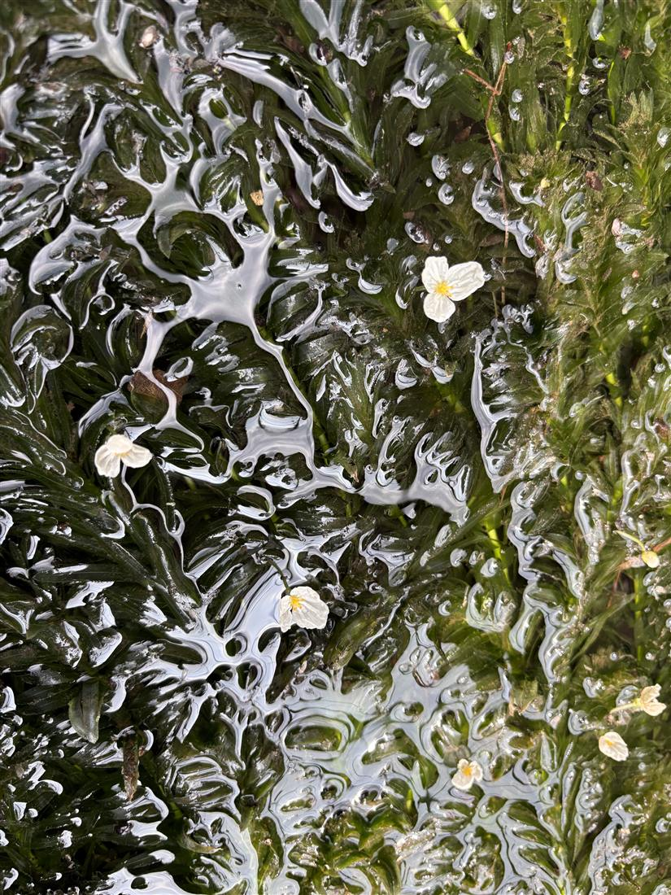
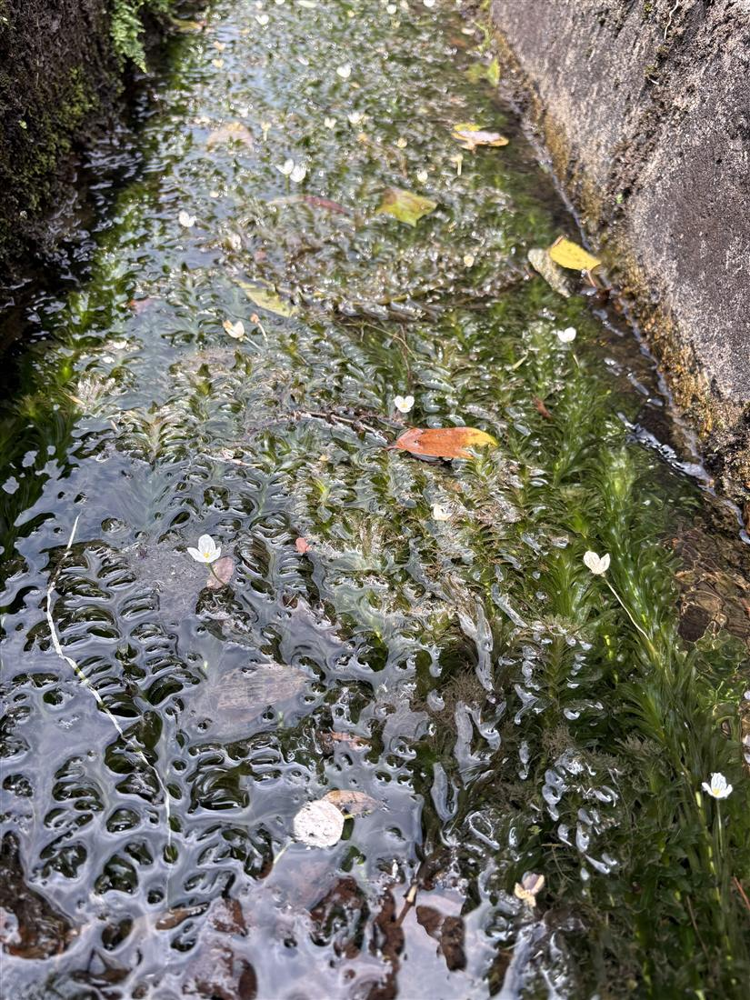
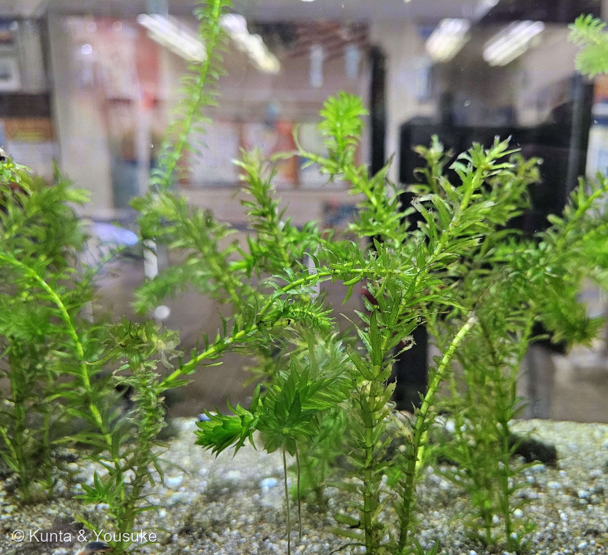
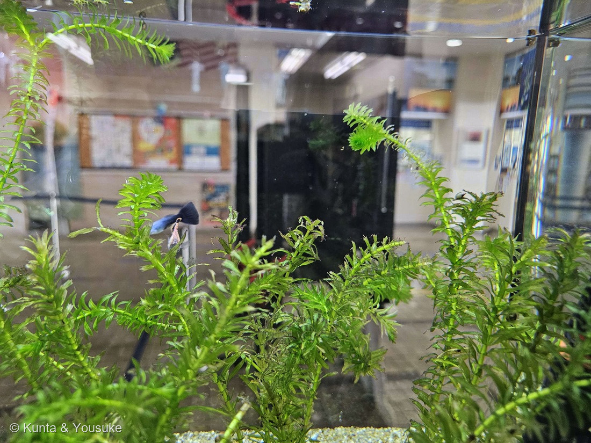

地図を読み込んでいるよ…
🔍 写真も地図も、押しているあいだ拡大して見られるよ（スマホは指を置いてすこし待ってね）。
🌍 の地図＝この子がもともと自生している場所を緑に。南アメリカ（アルゼンチン〜ブラジル南部）が原産。世界じゅうに帰化。日本へは大正時代に植物生理学の実験植物として導入され、いまは各地の川・水路・池にひろがった沈水性の帰化水草。
⭐南アメリカが原産——アルゼンチン〜ブラジル南部（ラプラタ川の流域）あたりの水草。⚠地図は国ごと塗っているけど、もとは亜熱帯の南米南東部の子だよ。今は世界じゅうの川や池に帰化。⚠日本は塗っていない——このオオカナダモは大正時代に実験植物として持ち込まれ、逃げ出して広がった帰化水草で、日本はふるさとじゃない（島根の水路で咲いていた）。⭐日本にいるのは雄株だけ・種はできず、ちぎれた茎でふえるので、地図の緑は「花からの旅」ではなく「もともとの生まれ故郷」だよ。
⚠ 地図は国（日本と中国だけ県・省）までしか塗れないから、ほんとうの分布より広く見えていることがあるよ。地図はだいたいの場所。正確なところは、上の文を見てね。
オオカナダモ（大カナダ藻）
Egeria densa
別名 · アナカリス（水草の呼び名）／ 原産 · 南アメリカ（帰化）／ 花期 · 5〜11月・水面に咲く／ ⭐理科の「原形質流動」観察の定番教材
トチカガミ科 · Hydrocharitaceae（オオカナダモ属 Egeria）── 図鑑で初めてのトチカガミ科
燻太さんの見立て「うって変わって、今回は水草。オオカナダモなのかな。白い花が、水の流れにさらわれずに咲いているよ。」──当たり。三弁の白花＋輪生の葉でオオカナダモ確定。花は水面で開くから流されにくい。
名前と学名の由来 ── 「大きなカナダの藻」…でも、ふるさとはカナダじゃない
- ⭐和名「オオカナダモ（大カナダ藻）」は、先に入っていた近縁の「カナダモ（＝コカナダモ、北アメリカ原産）」に似て、それより大きい藻、という意味。──ただしこの子のふるさとは南アメリカで、カナダではない。名前は「カナダモに似て大きい」という“あだ名”なんだ。
- ⭐属名 Egeria（エゲリア）は、ローマ神話の泉と水の女神エゲリア（Egeria）から。──泉や流れの水にすむ水草にぴったりの名前だね。
- 種小名 densa は、ラテン語で「密な・こみあった」。──葉がびっしり輪生して茂るようすから。写真のとおり、水中をぎっしりうめている。
- 別名「アナカリス」は、アクアリウム（熱帯魚の水草）での昔の呼び名（かつての属名 Anacharis から）。金魚やメダカの水草として、いちばん身近な水草のひとつだよ。
この植物のこと
- トチカガミ科オオカナダモ属の沈水植物（根や茎を水中にしずめて育つ水草）。図鑑で初めてのトチカガミ科だよ。
- ⭐葉は3〜6枚ずつ輪生（茎のまわりに車輪状につく）。長さ1.5〜4cm、細い線形で、ふちにごく細かい鋸歯。全長は1mを超えることもあり、上のほうで枝分かれする。
- ⭐⭐5〜11月、水面に白い花を咲かせる。三弁の丸い花びら＋黄色い芯で、よく目立つ。花は、水中の茎から細い花筒をのばして水面まで届き、水面に浮いて開く。燻太さんの「水の流れにさらわれずに咲いている」は、この“水面で開く”しくみのことだね。
- ⭐⭐南アメリカ原産の帰化。日本へは大正時代に、植物生理学の実験植物として導入された。──理科の授業で「原形質流動（細胞の中で緑の粒＝葉緑体がぐるぐる流れる）」を顕微鏡で観察する、あの定番の葉が、この子。燻太さんの研究とも、遠い親戚みたいな縁があるね。
- ⭐日本にいるのは雄株だけ（雌雄異株）。だからこの白い花はぜんぶ雄花で、種はできない。ふえるのは、ちぎれた茎から（栄養繁殖）。⚠とても増えやすく、在来の水草をおしのける外来種でもある。
同定について ── 白い水中の花、まちがえやすい3人
- ⚠清流に咲く白い花というと、バイカモ（梅花藻）を思い浮かべやすい。でもバイカモは花びらが5枚（梅の花形）・葉は羽状に細かく裂ける・キンポウゲ科。この子は三弁・葉は輪生の線形だから、バイカモではない。
- ⭐⭐同じトチカガミ科の在来「クロモ」との分け＝大きさと花の目立ち方。オオカナダモはクロモより2回りほど大きく、花がよく目立つ。クロモ・コカナダモ（外来）の花はごく小さくて地味。──この写真の大きくて白い三弁花が、オオカナダモの決め手。
- ⭐もうひとつ＝雄花だけ。日本のオオカナダモは雄株のみだから、目立つ雄花がたくさん水面に浮くのが、この子らしい景色。
⭐ 燻太さんへ ── 流れにさらわれない花
- 「白い花が、水の流れにさらわれずに咲いているよ」──いい観察だね。水中の茎から細い花筒がすーっと水面までのびて、花は水面の上でひらく。だから、下では水が流れていても、花は水面にちょこんと浮いて、流されにくい。
- そして、流されても平気な子でもある。種はできないけれど、ちぎれた茎のかけらが、流れて、また根づく。花は流れにさらわれず咲き、体は流れに乗って旅をする。──強い水草だ。だからこそ、在来の水辺をおしのけないよう、そっと見守る子でもあるね。
⭐⭐⭐⭐ 追記（2026.08.14）── 水槽の中で、はじめて「輪生」がちゃんと見えた
⭐⭐ 長崎旅行の二日目、燻太さんが九十九島の遊覧船乗り場の館内（長崎県佐世保市）の水槽で、この子に会ってくれた。——⭐写真③④がそれだよ。⭐燻太さんの一言＝「恐らくオオカナダモかな？」。
- ⭐⭐⭐⭐この2枚のおかげで、はじめて茎のつくりがちゃんと見えた。——①②は水路と水面の写真だったから、葉の並び方は遠くてよく分からなかったんだ。⭐水槽はガラスごしに真横から見られるので、節ごとに葉が車輪のようにつく（輪生）ことと、茎の先が葉の集まったふさになることが、はっきり分かる。
- ⭐⭐⭐ぼくは、写真の中で比を測ってみたよ（229 ダンチクで覚えた手＝同じ茎についている葉で測れば、遠近のずれが出ない）：
- 葉の長さ ÷ 葉の幅 ＝ 約 6.7
- 葉の長さ ÷ 茎の太さ ＝ 約 4.8
- ⚠⚠でも、正直に書いておくね ── これは「確定」ではない。
- ⚠この水槽には名札が無かった（235 イヌタヌキモのような展示水槽とちがって、ここはロビーの水槽だから）。
- ⚠輪生の枚数（3枚か、4〜5枚か）が数えられなかった——ガラスごしで葉が重なり、手前と奥がつぶれてしまう。⭐三河は「3〜5個輪生」としているので、ここが決まればいちばん強い証拠になるのに。
- ⚠葉のふちの小鋸歯も見えなかった（三河「縁は小鋸歯がある」）＝この解像度では無理。
- ⭐⭐それでも「オオカナダモでよさそう」と思う理由を、強い順に書くね。
- ①⭐測った比（6.7 と 4.8）が、オオカナダモの寸法の範囲に入る——⚠ただし、これは「他を排除できる」ほど強くはない。
- ②⭐葉が平たくて幅がある——よく似たコカナダモ（Elodea nuttallii）は葉がもっと細く、ねじれて反り返ることが多い。
- ③⭐茎がしっかり太く、株が大きい——在来のクロモ（この子のおまけ・Hydrilla verticillata）は「2回り小さい」子だよ。
- ④置かれ方——ロビーの観賞用水槽で、グッピーといっしょに植えられている。⭐この使い方で日本でいちばんふつうに売られている水草が、「アナカリス」＝オオカナダモなんだ。⚠⚠ただしこれは形の証拠ではなく、場所の証拠。いちばん弱い根拠として、いちばん下に置いておくね（087 ヤマモモで決めた「合っている証拠を数えない」の気もちで）。
- ⏳だから宿題が2つできた。——①⭐すいている株で輪生の枚数を数える（うちのメダカ鉢やお店の水槽でもいい）／②⭐葉を1枚とって、ふちの小鋸歯をルーペか顕微鏡で見る。⭐⭐この子は原形質流動の観察材料でもあるから、顕微鏡とはもともと相性がいいんだよ。
- ⭐おまけ ── ④の左のほうに、青い尾びれのグッピーが一匹うつっている。⭐水草の林のあいだをただよっていた。
- ⚠③は、もとの写真の右はしにガラスの向こうを歩く人がうつっていたので、その部分を切り落としてある。
参考：三河の植物観察「オオカナダモ」（Egeria densa・トチカガミ科・沈水植物・葉は3〜6輪生・長さ15〜40mm・ごく細かい鋸歯／5〜11月に水上へ三弁の白花・よく目立つ／在来クロモより2回り大きい／南米原産・雌雄異株で日本は雄株のみ／⭐2026.08.14に読み直したときの記述＝「葉は長さ1.5〜4㎝の線形で、3〜5個輪生」「葉は単葉、輪生、線形、長さ10〜40㎜×幅1.5〜4.5㎜」「縁は小鋸歯がある」「茎は直径1〜3mm」）／Wikipedia「オオカナダモ」（植物生理学の実験植物として導入・原形質流動の観察材料・栄養繁殖でふえる帰化水草）